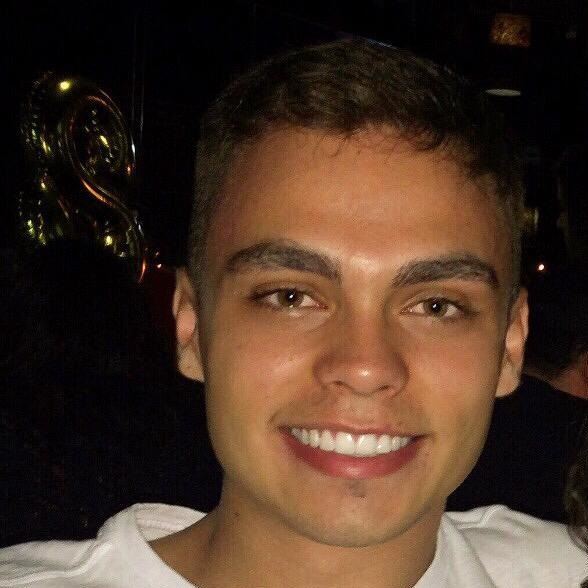
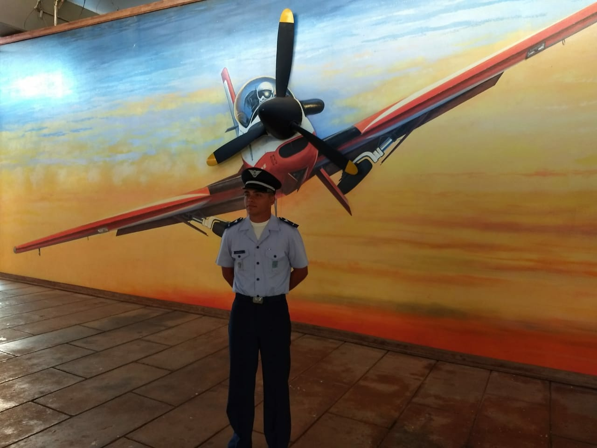

- Home
- >
- Currículo
Currículo
Dados Pessoais

Nome:
Caio Miguel Schultz Silva
Data de Nascimento:
09/09/1999
Residência:
Itajubá, Brasil
Idiomas:
Português (Nativo)
Inglês (Avançado)
Sobre Mim
Desde pequeno eu sempre fui um apaixonado pela eletrônica, desmontando brinquedos, retirando componentes com o ferro de solda imaginando conseguiria construir um robô com elas. Mais tarde ganhei um arduíno e desde lá venho mexendo usando muito essa ferramenta.
Fui aviador pela Força Aérea Brasileira durante os anos de 2018 e boa parte do ano de 2019, tendo prestado o concurso para a Academia da Força Aérea no ano de 2017. Durante esse período eu não obtive tanto progresso no que diz respeito à eletrônica, mas evoluí muito como pessoa, desenvolvendo minha disciplina, técnicas de estudo e superando vários limites físicos e mentais.
Já no ano de 2020 voltei ao meu objetivo inicial, trabalhar com hardware. Atualmente estou cursando Engenharia Eletrônica na Universidade Federal de Itajubá e faço parte da empresa Asimov Jr, que presta serviços de tecnologia.
Educação
2020- Em andamento
Engenharia Eletrônica/Graduação/Universidade Federal de Itajubá
Habilidades
Placas de Prototipação
Arduíno/ESP
Vendas
Experiência de Trabalho
Jan/2018 - Ago/2019
Cadete Aviador - Força Aérea Brasileira - Pirassununga
Mar/2020 - Dez/2020
Assessor de Estratégia e Gestão de Pessoas - Asimov Jr. - Itajubá
Jul/2020 - Em Andamento
Assessor de Automação - Asimov Jr. - Itajubá
Jan/2021 - Em Andamento
Assessor de Vendas - Asimov Jr. - Itajubá
Contato
caiomschultz99@gmail.com
(35) 99124-3650
Voltar ao TopoVoltar ao início